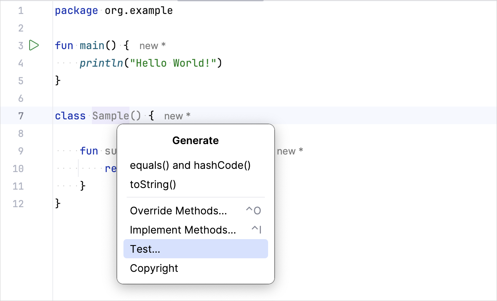

This tutorial shows you how to write a simple unit test and run it with the Gradle build tool.
The example in the tutorial has the
kotlin.test
library under the hood and runs the test using JUnit.
To get started, first download and install the latest version of
IntelliJ IDEA
.
Add dependencies
Open a Kotlin project in IntelliJ IDEA. If you don't have a project,
create one
.
Open the
build.gradle(.kts)
file and check that the
testImplementation
dependency is present. This dependency allows you to work with
kotlin.test
and
JUnit
:
dependencies {
// Other dependencies.
testImplementation(kotlin("test"))
}
dependencies {
// Other dependencies.
testImplementation 'org.jetbrains.kotlin:kotlin-test'
}
Add the
test
task to the
build.gradle(.kts)
file:
tasks.test {
useJUnitPlatform()
}
test {
useJUnitPlatform()
}
Here's a complete code for the
build.gradle.kts
:
plugins {
kotlin("jvm") version "2.1.0"
}
group = "org.example"
version = "1.0-SNAPSHOT"
repositories {
mavenCentral()
}
dependencies {
testImplementation(kotlin("test"))
}
tasks.test {
useJUnitPlatform()
}
Add the code to test it
Open the
Main.kt
file in
src/main/kotlin
.
The
src
directory contains Kotlin source files and resources. The
Main.kt
file contains sample code that prints
Hello, World!
.
Create the
Sample
class with the
sum()
function that adds two integers together:
class Sample() {
fun sum(a: Int, b: Int): Int {
return a + b
}
}
Create a test
In IntelliJ IDEA, select
Code
|
Generate
|
Test...
for the
Sample
class:

Specify the name of the test class. For example,
SampleTest
:
IntelliJ IDEA creates the
SampleTest.kt
file in the
test
directory. This directory contains Kotlin test source files and resources.
Add the test code for the
sum()
function in
SampleTest.kt
: